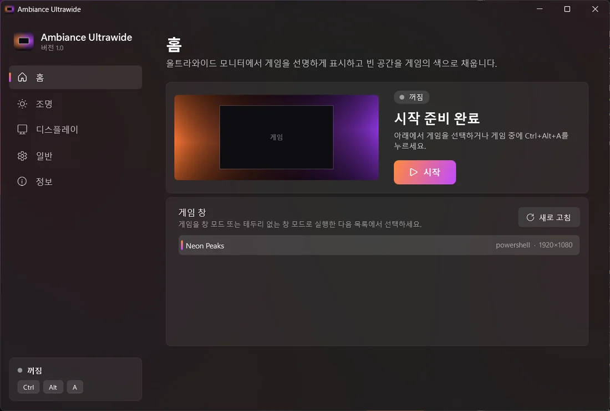
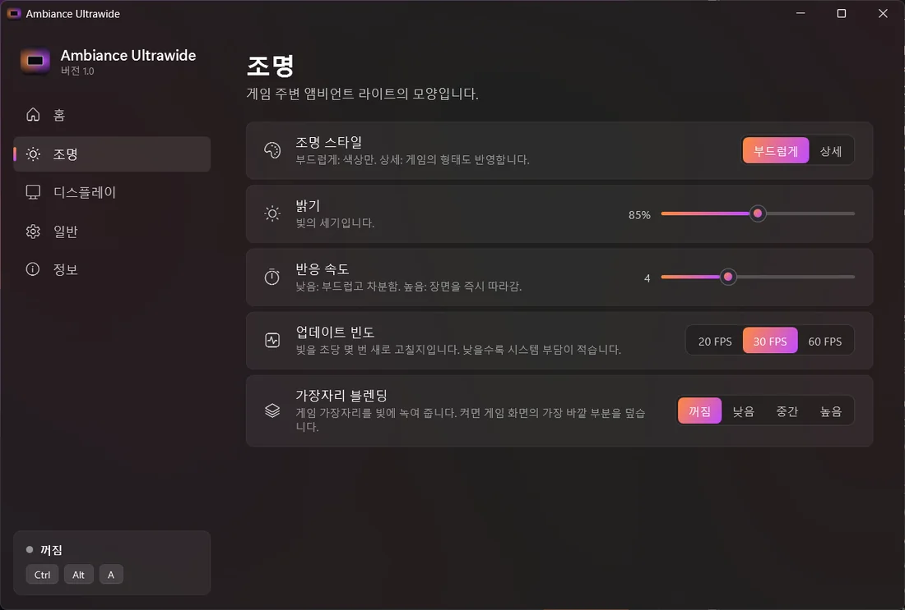

Ambiance Ultrawide
선명한 게임. 앰비언트 라이트. 울트라와이드를 위해.
울트라와이드 모니터에서 흐림 없이 선명한 게임 화면과 게임 색으로 만든 앰비언트 라이트. FPS 손실 없음, CPU 약 1%.
무료 · 오픈 소스 · Windows 10/11 · 12개 언어

게임은 선명하게, 빈 공간은 게임의 빛으로 채워집니다
흐릿한 저해상도는 이제 그만
왼쪽: Windows 해상도를 낮춘 화면. 오른쪽: Ambiance Ultrawide.


FPS 손실 없이 화면 가득
게임은 같은 픽셀을 렌더링하고 Windows가 크게 보여 줍니다

부드러운 빛 또는 상세한 빛
차분한 색의 빛, 또는 게임의 형태를 담은 빛

게임을 고르고 시작을 누르세요
또는 게임 중에 Ctrl+Alt+A

원하는 대로 빛을 조절
스타일, 밝기, 반응 속도, 업데이트 빈도

기능
GPU 캡처, CPU 약 1%. 게임 메모리를 건드리지 않습니다.
- 게임 색으로 만든 앰비언트 라이트
- 해상도를 낮출 때의 흐림 없는 선명한 화면
- 창 테두리 제거, 크기 조정 및 가운데 정렬
- FPS 손실 없이 화면 가득 확대
- GPU 캡처, CPU 약 1%
- 부드럽게·상세 두 가지 조명 스타일
- 밝기, 반응 속도, 업데이트 빈도 설정
- 게임 메모리를 건드리지 않고 데이터 수집 없음
소개
울트라와이드 모니터에서 낮은 해상도로 게임을 하려고 Windows 해상도를 낮추면 화면이 흐려집니다. Ambiance Ultrawide가 이 문제를 해결합니다.
게임을 창 안에 픽셀 그대로, 흐림 없이 표시하고 양옆의 빈 공간을 게임의 색으로 만든 앰비언트 라이트로 채웁니다. TV의 앰비언트 조명처럼 검은 여백 대신 게임의 분위기를 이어 주는 부드러운 빛이 퍼집니다.
원하면 Windows 돋보기를 이용해 화면을 꽉 채우도록 확대할 수도 있습니다. 게임은 같은 수의 픽셀을 렌더링하므로 FPS가 떨어지지 않습니다.
Ambiance Ultrawide는 매우 가볍습니다. 그래픽 카드로 화면을 캡처해 CPU를 거의 사용하지 않습니다. 게임의 메모리나 파일은 절대 건드리지 않고 화면에 보이는 영상만 읽습니다. 데이터를 수집하지 않으며 인터넷에 연결하지 않습니다.
사용 방법: 게임을 창 모드 또는 테두리 없는 창 모드로 실행하고 Ambiance Ultrawide에서 선택한 뒤 시작을 누르세요. 게임 중에 Ctrl+Alt+A를 눌러도 됩니다. Ctrl+Alt+Z로 확대를 켜고 끕니다.
12개 언어 지원. 무료 오픈 소스입니다.